Avenora Dental
Ağız ve diş sağlığında size özel tedavi planı
Avenora Dental'de tedavi planı, klinikte yapılan muayene sonrasında size özel olarak hazırlanır. Tedavi seçenekleri ve süreç, hekiminizle birlikte konuşulur.

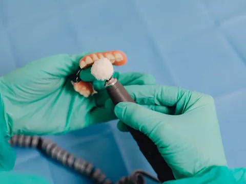
Zirkonyum, lamine ve gülüş tasarımı restorasyonları klinik laboratuvarımızda hazırlanır. Panoramik röntgen klinikte çekilir.
Panoramik röntgen klinikte çekilir.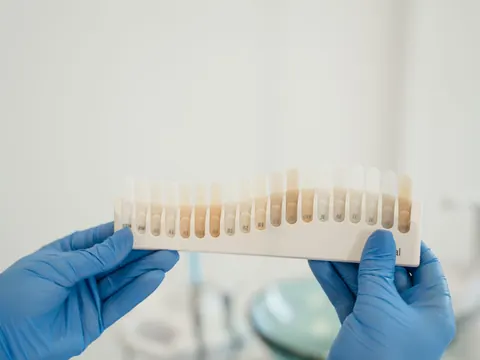
Renk seçimine hasta, hekim ve teknisyen birlikte bakar.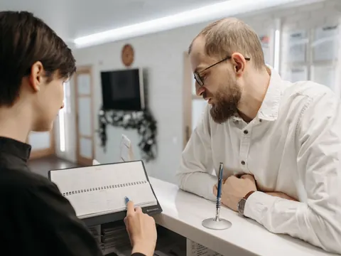
Pazartesi-Cumartesi açığız.
Tedavilerimiz
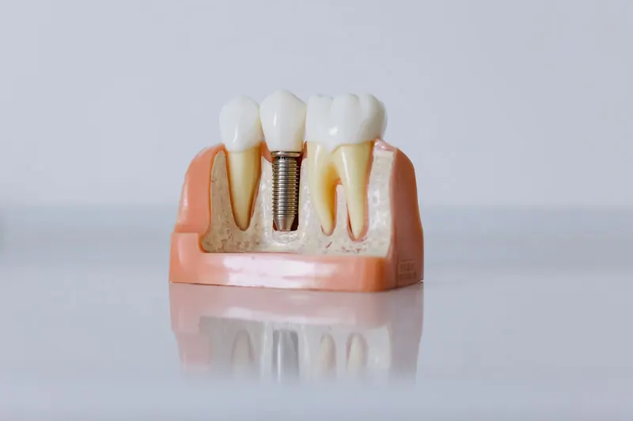
İmplant
Eksik dişlerin yerine, çene kemiğine yerleştirilen yapay kök üzerine yapılan sabit diş.

Zirkonyum kaplama
Doğal diş görünümüne yakın, metal desteksiz kaplama ve köprüler.

Lamine (porselen yaprak)
Dişlerin ön yüzüne yapıştırılan ince porselen yapraklar.
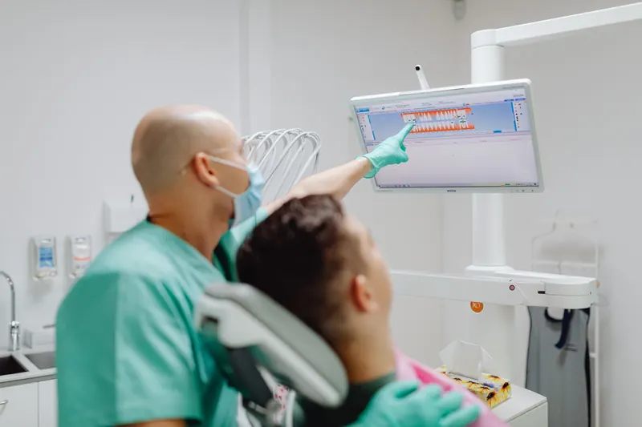
Gülüş tasarımı
Diş biçimi, rengi ve diziliminin yüz oranlarıyla birlikte planlanması.

Diş beyazlatma
Diş renginin hekim kontrolünde açılması.

Ortodonti ve şeffaf plak
Çapraşık dişlerin tel ya da şeffaf plaklarla düzeltilmesi.

Çocuk diş tedavisi
Süt ve kalıcı dişlerin korunmasına yönelik muayene ve tedaviler.

Kanal tedavisi
Zarar görmüş diş sinirinin temizlenerek dişin korunması.

Diş taşı temizliği
Diş yüzeyinde biriken taş ve plağın temizlenmesi.
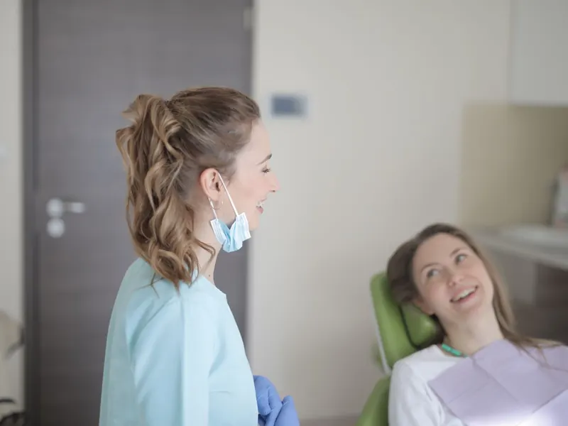
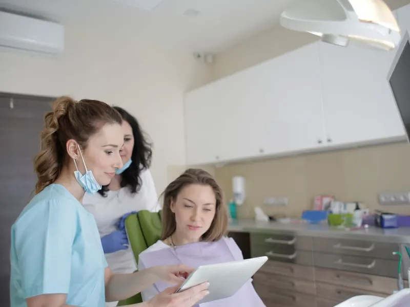
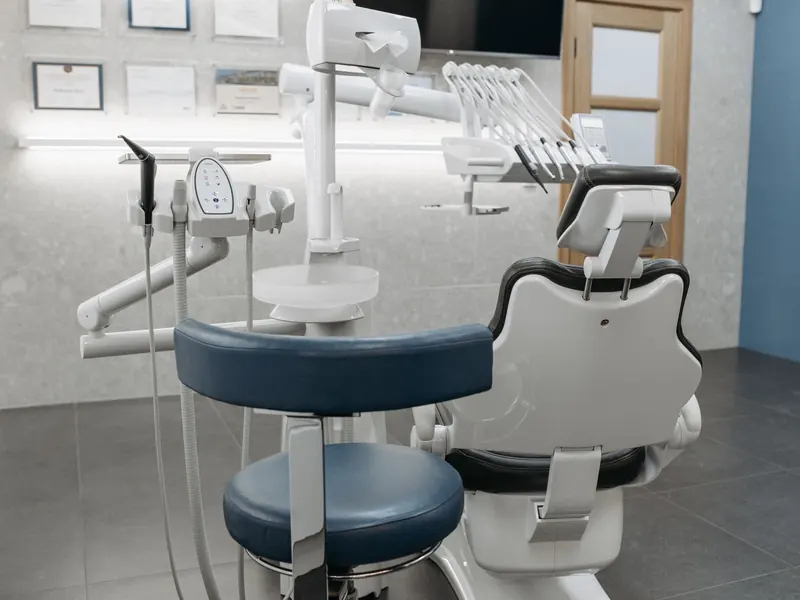
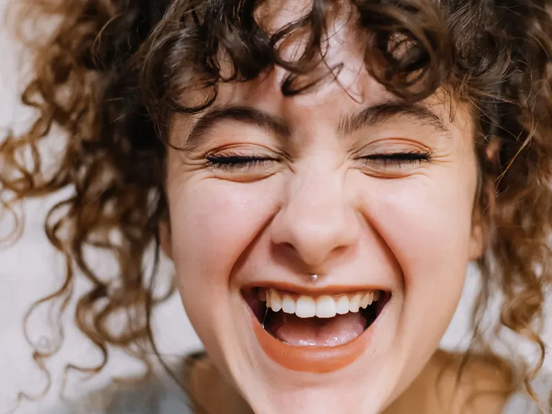
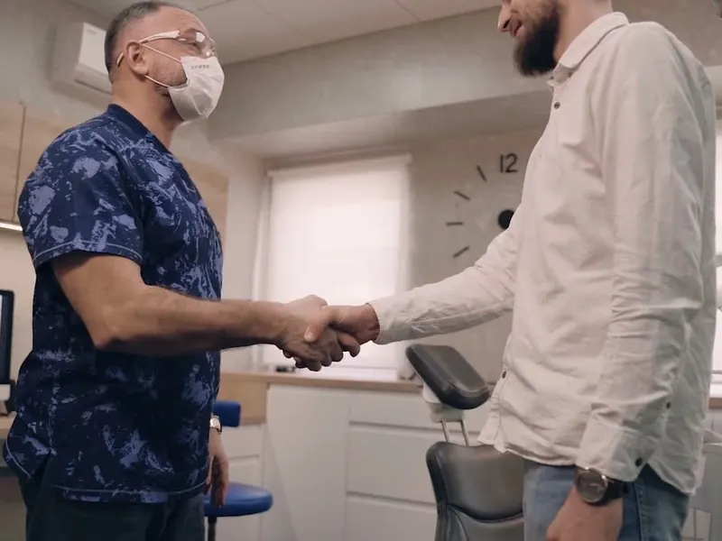
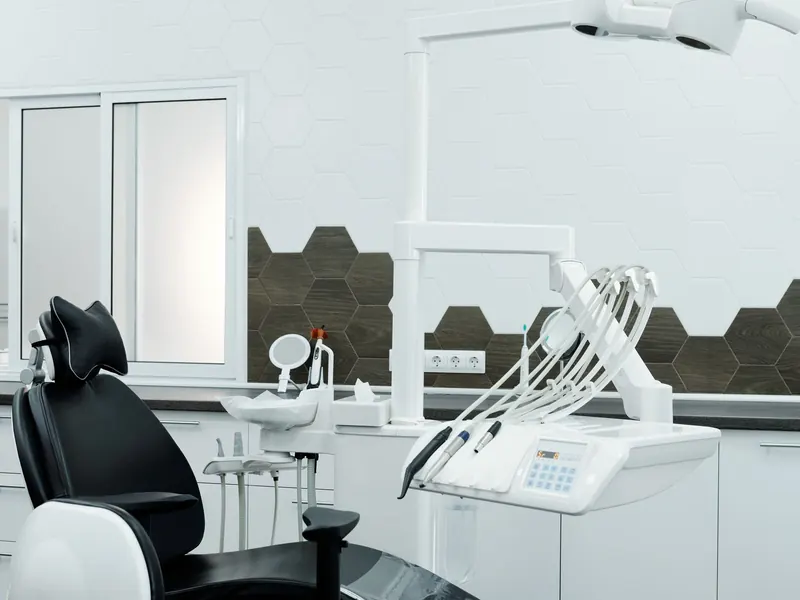